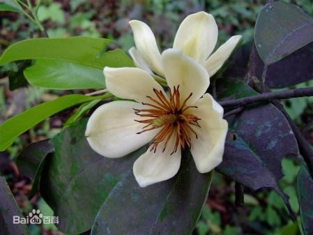
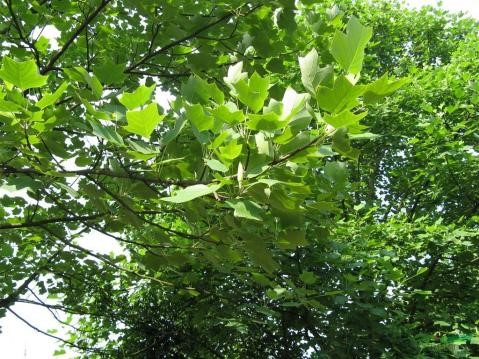
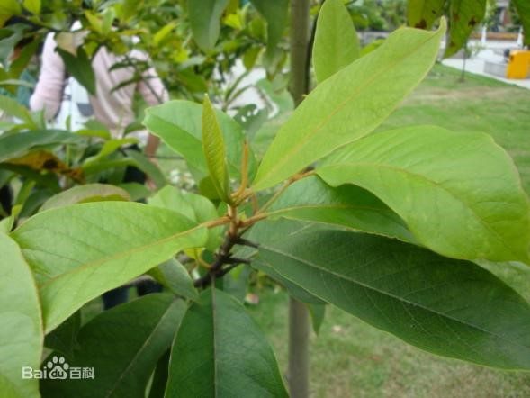
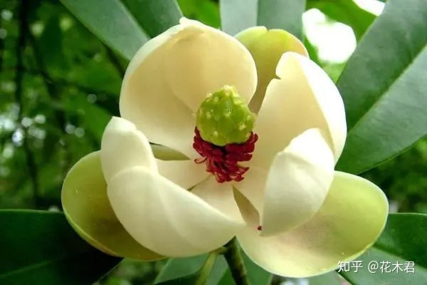
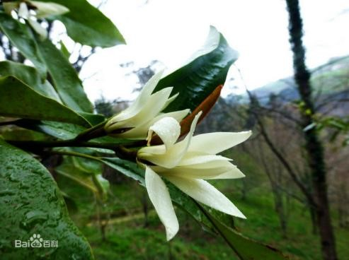
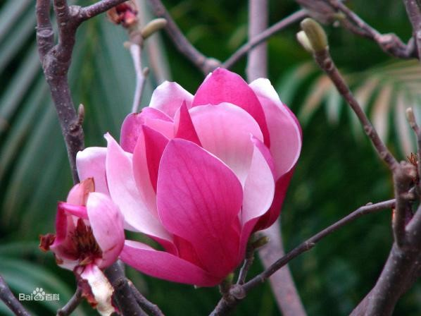

木兰园
木兰园建于1995年，园内分为三个点，分别在三湘景园、木兰科植物展示区和木兰科植物种质资源基因库，统称为木兰园，分布面积约180亩。湖南木兰科植物资源丰富，种类繁多、分布广泛，且常绿树种居多，四季可供观赏，观花期可由早春延续至夏秋。木兰园分为木莲区、木兰区、含笑区和综合区四个大区，共收集并成功保育木兰科植物7属82种，其中包括乐昌含笑、杂交马褂木、观光木、巴东木莲、醉香含笑、重瓣紫玉兰等一批优良用材树种和园林景观树种。

乐昌含笑
木兰科，常绿乔木，喜欢温暖湿润的气候，生长适宜温度为15-32℃，能抗41℃的高温，也能耐寒，树干挺拔，树荫浓郁，花香醉人，可孤植或丛植于园林中，亦可作行道树。花被片淡黄色，6片，芳香，外轮倒卵状椭圆形。花期3-4月，果期8-9月。

杂交马褂木
小枝灰色或灰褐色，树皮灰色，色泽浅，裂缝不明显；叶片马褂形一般为3 裂，基部一对侧裂片，前端1裂片特长；花被片倒卵形，绿色，有黄色纵条纹，长约2~4cm，果实聚合果纺锤体，较尖长。翅状小坚果先端顿或顿尖。

观光木
观光木，是木兰科的单属种，星散分布于云南、广西、广东、福建、江西等省区海拔500～1000米常绿阔叶林中，常绿乔木，高达25米，新枝、芽、叶柄、叶下面密被褐色柔毛。花期3—4月，果期10—12月。适宜生长于温暖湿润气候、深厚肥沃土壤，萌芽力强，用种子繁殖。被列入国家珍稀濒危二级保护植物。

巴东木莲
巴东木莲因其花瓣形似调羹，故又名调羹树，常绿乔木，高15-25米，树皮淡灰褐色带红色；小枝带灰褐色；叶薄革质，倒卵状椭圆形，长14-20厘米；花白色，有芳香，花被片9，外轮3片近革质，狭长圆形，先端圆，长4.5-6厘米；聚合果圆柱状椭圆形，长5-9厘米，淡紫红色。花期5-6月，果期7-10月。

醉香含笑
乔木，高达30米，胸径1米左右；树皮灰白色，光滑不开裂；芽、嫩枝、叶柄、托叶及花梗均被紧贴而有光泽的红褐色短绒毛。叶革质，倒卵形、椭圆状倒卵形，上面初被短柔毛，后脱落无毛，下面被灰色毛杂有褐色平伏短绒毛。花蕾内有时包裹不同节上2-3小花蕾，形成2-3朵的聚伞花序，花被片白色，通常9片，匙状倒卵形或倒披针形；蓇葖长圆体形、倒卵状长圆体形或倒卵圆形；种子1-3颗，扁卵圆形。花期3-4月，果期9-11月。
